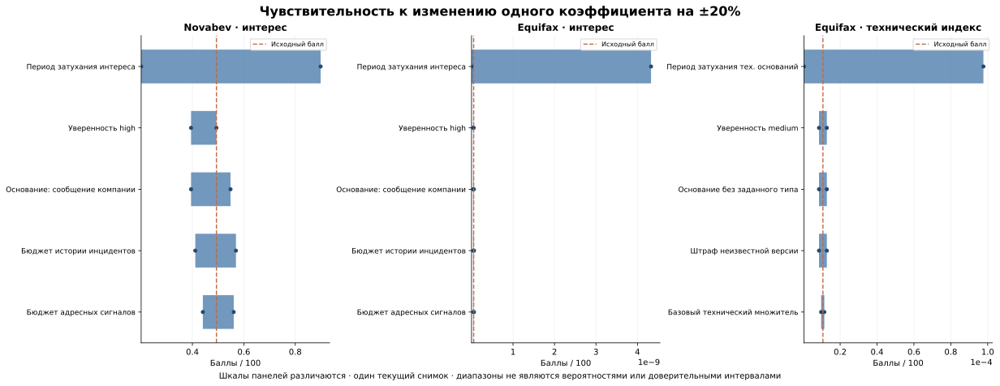

Чувствительность весов: Novabev и Equifax
Проверка методики • один снимок базы на 24 октября 2026 года • модель weighted-graph-v3
Основной результат
Числовые оценки заметно зависят от выбранного периода затухания. Точные баллы нельзя представлять как устойчивую меру вероятности атаки. Для рассмотренных объектов качественный вывод остаётся прежним: основания исторические, а технический индекс Novabev и ВинЛаб неизвестен. Стабильность этого вывода на двух кейсах не является проверкой предсказательной точности.
Для Novabev Group исходный индекс интереса 0,493 меняется от 0,201 до 0,899 при изменении одного коэффициента. Это примерно −59,3% и +82,1% относительно исходного значения. Самые сильные изменения связаны с периодом полураспада: 90 дней превращаются в 72 или 108 дней. Тот же результат ВинЛаб относится к тому же инциденту, а не к независимому наблюдению.
Что проверено
Всего 45 сценариев: один исходный, 42 изменения по одному из 21 числового параметра и два совместных изменения всех параметров. Варьируются уверенность, основания, статусы сигналов, периоды затухания, бюджеты компонентов и технические множители. Основная конфигурация не перезаписывается.
Расчёт выполняется на отдельной SQLite-копии с одной фиксированной датой. Хеш содержимого снимка и хеши конфигураций сохранены в sensitivity.json. Это предотвращает смешение изменений коэффициентов с обновлением публикаций во время эксперимента. as_of не восстанавливает исторические версии доказательств.
Ограничения коэффициентов соблюдаются: уверенность и качество остаются в пределах 0–1; бюджеты интереса суммируются до 100; технические множители контекста — до 1. Поэтому исходное изменение ±20% после нормализации не всегда остаётся фактическим изменением на 20%. Например, повышение бюджета истории 20 → 24 после нормализации даёт 23,077, а не 24. Для коэффициента high=1 повышение ограничивается единицей и не меняет результат. Все такие случаи отмечены.
Диапазоны результатов
| Объект и индекс | Исходный балл | По одному: минимум–максимум | Совместно: минимум–максимум |
|---|
| Novabev, интерес | 0,493471 | 0,200798–0,898662 | 0,128510–0,998514 |
| ВинЛаб, интерес | 0,493471 | 0,200798–0,898662 | 0,128510–0,998514 |
| Novabev / ВинЛаб, технический | Неизвестен | Неизвестен во всех вариантах | Неизвестен во всех вариантах |
| Equifax, интерес | 5,15756 × 10⁻¹¹ | 6,71023 × 10⁻¹⁴ – 4,32762 × 10⁻⁹ | 4,29455 × 10⁻¹⁴ – 4,80847 × 10⁻⁹ |
| Equifax, технический | 1.066416e-05 | 3.846565e-07–9.768523e-05 | 1.969441e-07–0.0001688001 |
Все числа — баллы на шкале 0–100. Диапазоны описывают только выполненные сценарии; они не являются доверительными интервалами и не показывают все возможные сочетания коэффициентов. В строках «по одному» и «совместно» исходный расчёт включён в диапазон; всего уникальных сценариев остаётся 45.
Большие относительные изменения Equifax возникают на почти нулевой базе. Например, увеличение технического индекса примерно в девять раз не означает девятикратного роста вероятности атаки: данных о современном развёртывании нет. Для проверки чувствительности одновременно важны абсолютное изменение, относительное изменение и смысл исходного доказательства.
Схема: диаграмма наиболее влиятельных параметров. На трёх панелях разные шкалы по горизонтали: они предназначены для сравнения настроек внутри одного индекса, не для сравнения рисков компаний.

Что устойчиво и что не установлено
Во всех вариантах выбранные доказательные пути остались теми же; новые доказательства коэффициенты не создали. Неизвестная техническая оценка Novabev не превратилась в нулевую или положительную. Историческая квалификация выбранных оснований также сохранилась.
Однако на этих данных почти нет конкурирующих пригодных путей, поэтому отсутствие переключений ещё не доказывает устойчивость алгоритма выбора. Проверялась одна дата и два исторических кейса. Точность ранжирования компаний, частота ложных тревог, калибровка и полезность для прогноза не измерялись. Совместные изменения не являются вероятностным распределением параметров или полным перебором.
Решение по методике
- Представлять индексы как объяснимые приоритеты проверки. Для реальной оперативной очереди сначала нужны свежие пригодные основания и сравнимое покрытие компаний.
- В текущей модели разделены временные политики: использование ПО затухает, статические факты о диапазонах CVE и известной эксплуатации — нет. Следующий шаг — независимо обосновать периоды затухания наблюдаемой активности и установок.
- Не подбирать коэффициенты так, чтобы два разобранных кейса получили желаемые баллы. Сначала зафиксировать критерии исхода и горизонт, собрать снимки по времени и контрольную выборку.
- В v3 подтверждение эксплуатации у конкретной компании показывается отдельным историческим результатом и не усиливает текущий технический индекс.
- Сохранять ограничения и неизвестность рядом с итоговым числом. На защите показывать диапазон сценариев и выбранное доказательство, а не один красивый процент.
Исходные материалы: Novabev и ВинЛаб, Equifax. Полные варианты: таблица всех сценариев, JSON, CSV. Эти файлы позволяют перепроверить фактические изменения и воспроизвести эксперимент.
Повторный запуск
python3 scripts/freeze_examples.py
Команда выше воспроизводит поставляемый срез. Для рабочей базы: python -m app.main graph-sensitivity; для выбранной компании: graph-sensitivity --company equifax. Для другого масштаба изменения: --delta 0.1. По умолчанию создаются файлы в data/processed/sensitivity. Команда не изменяет рабочие коэффициенты и не синхронизирует Neo4j. Документированные кейсы и эта записка — сохранённый срез; после новых данных их следует пересоздать.